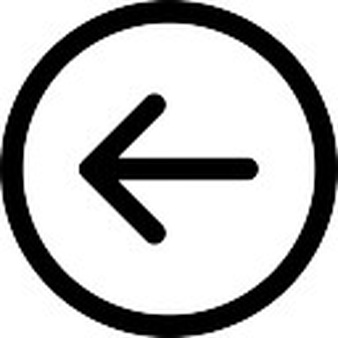

Tipuri de date obiectuale. Încapsulare
Un tip de date abstract (ADT) este o entitate caracterizatã
printr-o structurã de date și un ansamblu de operaþii aplicabile
acestor date. Considerând, în rezolvarea unei probleme de
gestiune a accesului utilizatorilor la un anumit site, tipul abstract USER,
vom obseva cã sunt multe date ce caracterizeazã un utilizator
Internet. Totuși se va ține cont doar de datele semnificative pentru problema
datã. Astfel, ”culoarea ochilor” este irelevantã în
acest caz, în timp ce ”data nașterii” poate fi importantã.
În aceeași idee, operații specifice ca ”se înregistreazã”,
”comandã on-line” pot fi relevante, în timp ce operaþia
”manâncã” nu este, în cazul nostru. Evident, nici nu
se pun în discuție date sau operații nespecifice (”numãrul
de laturi” sau acțiunea ”zboarã”). Operațiile care sunt accesibile
din afara entitãții formeazã interfața acesteia. Astfel,
operații interne cum ar fi conversia datei de naștere la un numãr
standard calculat de la 01.01.1900 nu fac parte din interfaþa tipului
de date abstract, în timp ce operaþia ”plaseazã o comandã
on-line” face parte, deoarece permite interacțiunea cu alte obiecte (SITE,
STOC etc.) O instanțã a unui tip de date abstract este o ”concretizare”
a tipului respectiv, formatã din valori efective ale datelor. Un
tip de date obiectual este un tip de date care implementeazã un
tip de date abstract. Vom numi operațiile implementate în cadrul
tipului de date abstract metode. Spunem cã datele și metodele sunt
membrii unui tip de date obiectual. Folosirea unui astfel de tip presupune:
existența definiției acestuia, apelul metodelor și accesul la date. Un
exemplu de-acum clasic de tip de date abstract este STIVA. Ea poate avea
ca date: numerele naturale din stivã, capacitatea stivei, vârful
etc. Iar operațiile specifice pot fi: introducerea în stivã
(push) și extragerea din stivã (pop). La implementarea tipului STIVA,
vom defini o structura de date care sã reþinã valorile
memorate în stivã și câmpuri de date simple pentru: capacitate,
numãr de elemente etc. Vom mai defini metode (subprograme) capabile
sã creeze o stivã vidã, care sã introducã
o valoare în stivã, sã extragã valoarea din vârful
stivei, sã testeze dacã stiva este vidã sau dacã
stiva este plinã etc. Crearea unei instanþe noi a unui tip obiectual,
presupune operaþii specifice de ”construire” a noului obiect, metoda
corespunzãtoare purtând numele de constructor. Analog, la desfiinþarea
unei instanþe și eliberarea spaþiului de memorie
8 Introducere în .Net Framework (Suport de curs)
aferent datelor sale, se aplicã o metodã specificã
numitã destructor1. rice stivã golitã, pânã
ce rãmâne o singurã stivã. De observat cã
toate aceste prelucrãri recurg la datele, constructorul, destructorul
și la metodele din interfaþa tipului STIVA descris mai sus. Principalul
tip obiectual întâlnit în majoritatea mediilor de dezvoltare
(Viisual Basic, Delphi, C++, Java, C#) poartã numele de clasã
(class). Existã și alte tipuri obiectuale (struct, object). O instanþã
a unui tip obiectual poartã numele de obiect. La implementare, datele
și metodele asociate trebuie sã fie complet și corect definite, astfel
încât utilizatorul sã nu fie nevoit sã þinã
cont de detalii ale acestei implementãri. El va accesa datele, prin
intermediul proprietãþilor și va efectua operaþiile,
prin intermediul metodelor puse la dispoziþie de tipul obiectual definit.
Spunem cã tipurile de date obiectuale respectã principiul
încapsulãrii. Astfel, programatorul ce utilizeazã un
tip obiectual CONT (în bancã) nu trebuie sã poarte grija
modului cum sunt reprezentate în memorie datele referitoare la un
cont sau a algoritmului prin care se realizeazã actualizarea soldului
conform operaþiilor de depunere, extragere și aplicare a dobânzilor.
EL va utiliza unul sau mai multe conturi (instanþe ale tipului CONT),
accesând proprietãþile și metodele din interfaþã,
realizatorul tipului obiectual asumându-și acele griji în momentul
definirii tipului CONT. Permiþând extensia tipurilor de date
abstracte, clasele pot avea la implementare: • date și metode caracterisitice
fiecãrui obiect din clasã (membri de tip instanþã),
• date și metode specifice clasei (membri de tip clasã). Astfel, clasa
STIVA poate beneficia, în plus, și de date ale clasei cum ar fi: numãrul
de stive generate, numãrul maxim sau numãrul minim de componente
ale stivelor existente etc. Modificatorul static plasat la definirea unui
membru al clasei face ca acela sã fie un membru de clasã, nu
unul de tip instanþã. Dacã în cazul membrilor
nestatici, existã câte un exemplar al membrului respectiv pentru
fiecare instanþã a clasei, membrii statici sunt unici, fiind
accesaþi în comun de toate instanþele clasei. Mai mult,
membrii statici pot fi referiþi chiar și fãrã a crea
vreo instanþã a clasei respective.
